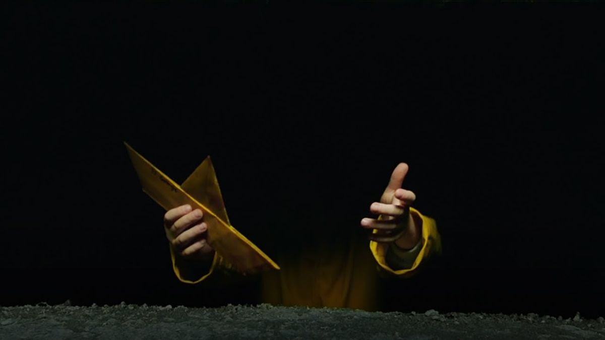

It - A Coisa, um grupo de sete adolescentes de Derry, uma cidade no Maine, formam o auto-intitulado "Losers Club" - o clube dos perdedores. A pacata rotina da cidade é abalada quando crianças começam a desaparecer e tudo o que pode ser encontrado delas são partes de seus corpos. Logo, os integrantes do "Losers Club" acabam ficando face a face com o responsável pelos crimes: o palhaço Pennywise.
